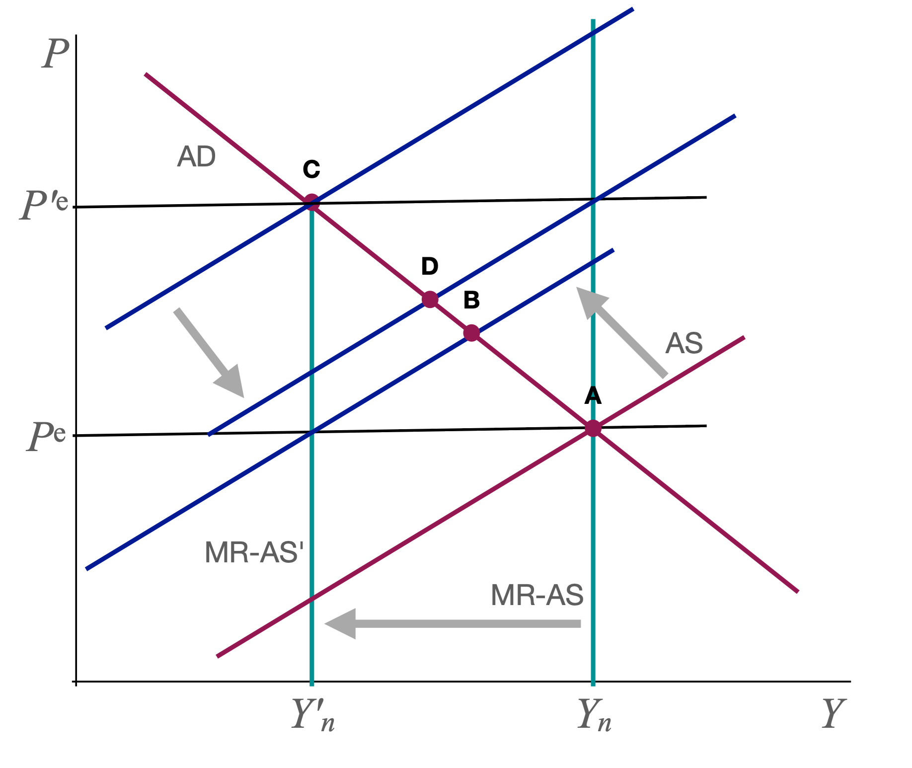
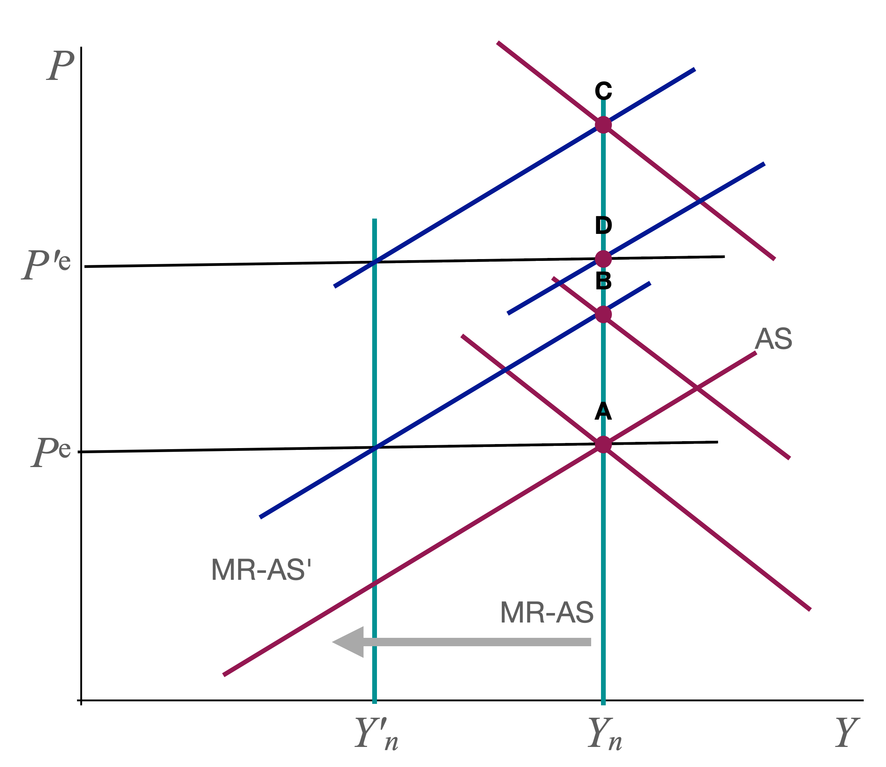

Answer Sketch: Writing Assignment 2¶
Q2: Fed does nothing. Price expectations anchored.¶
It is easiest to do that case first. The graph looks like this:

Higher \(m\) shifts SR-AS and MR-AS left. The SR equilibrium moves to B. We get the usual stagflation outcome. Since \(P > P^e\) workers are "tricked" into thinking their real wage is high and they work "too much" (compared with the new \(Y_n\)). Higher prices raise \(i\) and crowd out some investment.
If price expectations are anchored, the AS curve does not shift after the initial shock.
Once the shock reverses (\(m \downarrow\)), we simply return to the original point A.
Q1: Fed does nothing. Price expectations adjust.¶
This is the baseline model that we studied in class. The SR is the same as in Q2 (point B).
The difference is that \(P^e\) now starts to drift up. The economy gradually moves to the new MR equilibrium C. Price expectations rise to \(P'^e\).
When the \(m\) shocks disappears, MR-AS shifts back to \(Y_n\) and SR-AS shifts right as well to the point where we have full employment at \(Y_n\) with the new price expectations. That new equilibrium is D. Note that we do not return to A right away b/c price expectations are still too high.
Getting back to \(Y_n\) requires a period of expansion with falling prices.
We can clearly see the benefits of anchoring expectations. The recession is milder (B vs C) and the recovery is faster compared with the case of unanchored expectations.
Q4: Fed stabilizes output. Price expectations fixed.¶
The SR equilibrium is now at B in the following figure:

The \(m\) shock has shifted AS as before. The Fed now also shifts AD to stabilize \(Y\).
If price expectations are fixed, the economy simply stays at B until the m shock disappears. Then the economy smoothly return to A. It's, of course more complicated in the real world where AD cannot be shifted without lags. But the key point is that Fed can stabilize output without getting inflation started. All we get is a temporary rise in prices.
Q3: Fed stabilizes output. Price expectations adjust.¶
Now the economy does not stay at B while the Fed waits for the \(m\) shock to disappear. Instead, price expectations start to rise, shifting AS up. Stabilizing output means that the Fed has to accommodate with higher \(M\) so that AD shifts up as well. Inflation gets started and keeps going while the supply shock lasts.
By the time the \(m\) shocks disappears, we are at a point like C with price expectations \(P'^e\). The AS curve now shifts down and we end up at D (if the Fed contracts \(M\) to stabilize output).
If the Fed wants to bring prices down to point A, it needs to engineer a recession for a while. More importantly, if inflation expectations become entrenched, then \(P^e\) keeps shifting up even when the shock is over (this is not part of the current model). Then the Fed needs to create a recession just to get inflation back down to target.
The benefits of anchoring price expectations are again clear. Inflation never takes off. The Fed avoids a protracted period of disinflation after the shock disappears.